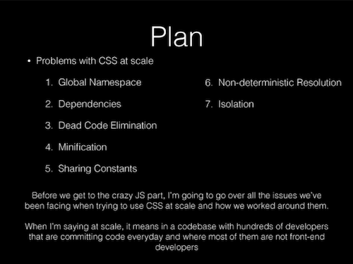

Chapter 25 CSS in JS
Questo capitolo discute la scrittura di CSS in JS, una tecnica in cui stili e class CSS sono definiti in JavaScript invece che in file CSS separati. Questa tecnica e’ particolarmente comune e utile in React, e risolve diversi problemi trovati nel gestire lo styling di grandi progetti web.
25.1 Perche’ CSS in JS?
Nel novembre 2014, Christopher Chedeau di Facebook ha tenuto una talk che delineava molti dei problemi che si presentano quando si cerca di sviluppare CSS per una grande applicazione:

Una slide dalla talk di Chedeau. Clicca l’immagine per vedere l’intero deck.
In breve, la talk sottolinea come definire class CSS equivalga in realta’ a definire variabili globali: poiche’ gli stylesheet sono caricati sull’intera pagina, ogni definizione di class e’ di fatto “globale” e disponibile a ciascun Component dentro quella pagina. Se definisci una class .button da qualche parte nel tuo CSS, allora ogni Component ha accesso alla class .button.
Questo diventa un problema quando vuoi supportare molti components diversi. Per esempio, non potresti usare
.buttonper piu’ button che sono tutti stilizzati in modo diverso. Invece, dovresti definire class diverse per ogni button… ed essere attento a far si’ che i nomi non “confliggano” (per esempio, non provare a definire un.button-submitper due tipi diversi di submit button!). Puoi usare schemi di denominazione accurati (come BEM) per assicurarti che i nomi non confliggano, ma questo richiede molta disciplina da sviluppatori e pensiero extra–e un solo errore puo’ portare a bug difficili da tracciare!Inoltre, le regole CSS sono variabili globali che includono dettagli impliciti nel loro ordine (per esempio, le regole piu’ in basso nello stylesheet override quelle precedenti). Questo e’ un problema quando stai cercando di caricare molti stylesheet diversi per Components diversi–che possono essere caricati in ordini diversi o persino in modo asincrono, quindi non sai quale stylesheet verra’ caricato per primo!
La soluzione proposta a questo problema e’ definire le definizioni di stile e class CSS in JavaScript come variabili JavaScript, e poi usare una library o un build tool per convertire quelle variabili in class CSS correttamente name-spaced che sono incluse nel DOM renderizzato. Questo permette a ciascun Component di definire il proprio styling (e’ solo una variabile JavaScript) senza preoccuparsi di variabili globali in conflitto.
- Anche se CSS e JavaScript non saranno piu’ cosi’ separati, alla fine il codice che scrivi sara’ piu’ semplice e piu’ facile da intuire. Tuttavia, il DOM prodotto da queste tecniche apparira’ spesso molto piu’ disordinato (per esempio, negli strumenti di sviluppo), con nomi di class piu’ complessi o grandi quantita’ di inline styling. Questo e’ generalmente un compromesso accettabile: il DOM non e’ direttamente visibile alla maggior parte degli user, ed e’ persino ignorato dai lettori di schermo.
La talk di Chedeau e la sua soluzione sono state enormemente influenti, segnando un grande cambiamento nel modo in cui gli sviluppatori web pensano al CSS. Ha portato alla creazione di un numero grande di progetti che offrono modi diversi di includere CSS in JS. Queste libraries fanno piu’ o meno la stessa cosa, ma usano sintassi diverse per risolvere il problema di rendere piu’ semplice sviluppare stili CSS non globali.
25.2 Stili inline in React
Il modo piu’ semplice per includere CSS in JS usando React e’ usare il suo supporto integrato per l’inline styling. Puoi definire una regola CSS come un object JavaScript:
/* Versione CSS */
h1 {
font-family: 'Helvetica';
color: white;
background-color: #333;
}/* Versione JavaScript */
const h1Style = {
fontFamily: 'Helvetica',
color: 'white',
backgroundColor: '#333'
}Questo richiede solo poche modifiche rispetto a come scriveresti normalmente le properties CSS: devi usare il camelCase per i nomi delle property come quando ti riferisci allo styling del DOM (dato che - non e’ un carattere legale nelle JavaScript variables); devi mettere tutti i values delle property tra virgolette, e usare , invece di ; per separare le properties nell’object literal.
Puoi poi applicare questo object a un elemento specifico specificandolo come attribute style usando JSX:
<h1 style={h1Style}/>Ciao mondo!</h1>Questo non sta in realta’ definendo una regola (non si applichera’ a tutti gli elementi <h1>), ma sta usando inline styling per applicare lo stile solo a un elemento specifico.
Normalmente, in contesti non-React, l’inline styling (specificare properties CSS nell’attribute style di un elemento) e’ considerato bad practice. E’ difficile da modificare e mantenere, e porta a duplicazione di codice e scarsa coesione (con regole di stile sparse nel programma). Questo e’ parte del motivo per cui CSS-in-JS e’ considerato “speciale”: prende cio’ che di solito e’ bad practice e mostra come, se usato in un modo particolare (in React), possa produrre codice migliore!
Puoi perfino usare object JavaScript per namespace specifici “style” objects, permettendoti di produrre qualcosa di simile alle class CSS (dove puoi organizzare e applicare molte properties in una volta):
const styles = {
success: {
backgroundColor: 'green',
color: 'white'
},
failure: {
backgroundColor: 'red',
color: 'white'
}
}
//...
<button style={styles.success}>Hai vinto!</button>
<button style={styles.failure}>Hai perso.</button>Nota che queste non sono vere class CSS, ma semplicemente nomi dati a stili applicati inline. Quindi non ti riferiresti a questo button come .success (o anche .style.success)—e’ solo un button senza class con alcuni stili applicati!
25.3 Aphrodite
Gli inline styles di React ti permettono di specificare lo styling senza creare variabili globali, ma non forniscono vere class CSS. Questo significa che perdi un po’ di significato semantico (dato che non puoi determinare, per esempio, se un button e’ un button “success” solo dal DOM renderizzato). Perdi anche la possibilita’ di gestire regole CSS piu’ complesse, come le pseudo-class (in particolare quelle come :hover o :active) e le media queries.
Per queste feature, dovrai invece usare una library di terze parti che supporti CSS-in-JS. Esiste un’ampia varieta’ di opzioni per libraries che possono essere usate per creare un CSS-in-JS robusto. Una delle piu’ pulite (nell’opinione dell’autore) e’ Aphrodite, che e’ sviluppata e mantenuta dagli sviluppatori di Khan Academy. Questa library ti permette di specificare class CSS come object JavaScript, e poi applicare quelle class a un elemento React tramite l’attribute className come al solito.
Specifichi una collezione di class di stile usando il metodo StyleSheet.create() fornito dalla library. Questo metodo riceve un object le cui keys sono i “class names”, simile all’esempio sopra. Poi referenzi le “class” di questo object usando la function css() della library:
import { StyleSheet, css } from 'aphrodite';
const styles = StyleSheet.create({
success: {
backgroundColor: 'green',
color: 'white'
},
failure: {
backgroundColor: 'red',
color: 'white'
}
});
//...
<button className={css(styles.success)}>Hai vinto!</button>
<button className={css(styles.failure)}>Hai perso.</button>
- Nota che le class sono ancora name-spaced (per esempio,
styles.success, non solosuccess), quindi passi il risultato della functioncss()alla propertyclassName.
La library Aphrodite prendera’ questo StyleSheet che hai definito e lo usera’ per generare automaticamente regole di class CSS che vengono iniettate nella pagina, proprio come se le avessi scritte dentro un file .css! Il codice JSX sopra produrra’ elementi DOM:
<button class="success_c72tod">Hai vinto!</button>
<button class="failure_cioc8l">Hai perso.</button>Nota che i nomi delle class iniziano con il nome che hai dato, ma hanno una serie di caratteri aggiuntivi alla fine (il _c72tod dopo success). Questi caratteri sono un hash delle properties CSS contenute in quel classname, e sono usati per distinguere tra class diverse dopo che sono state iniettate nella pagina e quindi sono diventate variabili globali. In effetti, questa library produrra’ automaticamente “nomi unici” per ogni class CSS che definisci (differenziati da un hash deterministico alla fine), cosi’ non devi preoccuparti che la class success in un Component interferisca con la class success in un altro.
Aphrodite ti permette anche di specificare pseudo-selector e media query. Questi sono specificati come properties delle class a cui dovrebbero applicarsi; il nome di quella property e’ (una stringa di) il pseudo-selector o la media query, e il value di quella property e’ un altro object contenente le properties CSS da applicare:
const styles = StyleSheet.create({
//...
hover: {
':hover': {
backgroundColor:'gray'
}
},
responsive: {
'@media (min-width:598px)': {
fontSize:'2rem'
}
}
});- Questo e’ diverso da come definisci normalmente le media query: invece di specificare una media query con un blocco che contiene le class a cui applicarsi, specifichi una class il cui blocco contiene la media query.
Puoi passare piu’ class di stile (o array di class) nel metodo css(), e verranno automaticamente combinate in un singolo stile unico:
//passa piu' stili in `css()`
<button className={css(styles.success, styles.hover)}/>Hai vinto!</button>Questo renderizzera’ un elemento nel DOM:
<button class="success_c72tod-o_O-hover_2nsohz">Hai vinto!</button>Nota che qui le class success e hover sono state concatenate in una singola class (usando -o_O- come separatore); questo serve a evitare qualsiasi problema di “ordine”–assicurando che le opzioni hover vengano sempre applicate dopo le opzioni success.
Aphrodite supporta alcune altre funzionalita’ e casi limite, vedi la documentazione per i dettagli.
Aphrodite e’ solo una delle tante CSS-in-JS libraries, ognuna con la propria sintassi. Ma quasi tutte generano uno stile inline da iniettare in un elemento, oppure producono il proprio stylesheet iniettato con class name auto-generati. In entrambi i casi, puoi concentrarti solo sullo styling dei component senza preoccuparti che il CSS “pesti i propri piedi”!
25.4 CSS Modules
Un altro approccio popolare per risolvere il problema dello “scope globale” con CSS e’ usare i CSS Modules. Invece di convertire object JavaScript in stili CSS e iniettarli nella pagina, con i CSS Modules scrivi le definizioni delle class in file .css come al solito. I CSS Modules poi post-processano i file .css al build time (in modo simile a SASS), convertendo le class CSS in versioni con scope locale. Queste class con scope locale vengono poi importate come object JavaScript cosi’ possono essere referenziate in modo simile ai React Inline Styles:
/* app-styles.css */
.success {
background-color: green;
color: white;
}
.failure {
background-color: red;
color: white;
}/* App.js */
import styles from './app-styles.css'
//...
<button className={styles.success}>Hai vinto!</button>
<button className={styles.failure}>Hai perso.</button>Questo renderizzera’ elementi DOM con class name unici e con scope locale (simile a cio’ che fa Aphrodite):
<button class="src-___App__success___1t37A">Hai vinto!</button>
<button class="src-___App__failure___2BnXi">Hai perso.</button>Nel complesso, i CSS Modules hanno il vantaggio di permetterti di scrivere gli stili in file .css come al solito (e’ chiaro dove si trova il tuo CSS), possono essere leggermente piu’ veloci (dato che alla fine e’ solo un file CSS caricato normalmente) e includono alcune feature extra che supportano la composizione delle class (simile a quanto fornito da SASS).
Ejecting da Create React App
I CSS Modules sono un post-processor che “compila” il tuo CSS al build time, invece che al run time. Quindi, per utilizzare i CSS Modules, devi configurare il “build system” della tua applicazione per modularizzare il CSS. Finora hai usato Create React App per avere un build system senza configurazioni (usando webpack dietro le quinte). Tuttavia, Create React App non supporta CSS Modules di default—devi modificare il sistema Webpack fornito per includere lo step di modularizzazione.
Per modificare la configurazione Webpack inclusa in Create React App, devi fare l’eject. Questo processo cambiera’ il tuo progetto in modo che i file di configurazione di Webpack siano inclusi come parte del codice sorgente, invece di essere caricati da una singola library esterna (react-scripts). L’eject ti permettera’ di modificare come vengono buildati i tuoi progetti React.
L’eject e’ un’operazione a senso unico! Una volta che hai “estratto” le configurazioni di build, e’ impossibile rimetterle a posto (a meno di creare una nuova app e copiare i file). Assicurati di volerlo fare! Nota che se davvero non vuoi fare l’eject, ci sono altre soluzioni piu’ fragili.
Per fare l’eject delle informazioni di configurazione, esegui il seguente comando:
cd path/to/app # dalla cartella dell'app
npm run ejectQuesto creera’ due nuove cartelle nel tuo progetto: scripts (che contiene gli script build e start, per esempio cio’ che accade quando esegui npm start), e config/ (che contiene i file di configurazione di build).
- I file di configurazione Webpack in particolare si trovano in
config/webpack.config.dev.js(configurazione per il server di sviluppo) econfig/webpack.config.prod.js(configurazione per le build di produzione). Per supportare i CSS Modules dovrai modificare entrambi i file di configurazione di sviluppo e produzione.
Dovrai fare una modifica semplice ai file di configurazione di Webpack per supportare i CSS Modules. Nel file webpack.config.dev.js, intorno alla riga 160 (al momento della scrittura), troverai un object “rule” con la property test: /\.css$/; questa specifica quale processo deve essere applicato ai file .css. Modifica questa property:
{
test: /\.css$/,
use: [
require.resolve('style-loader'),
{
loader: require.resolve('css-loader'),
options: {
importLoaders: 1,
//AGGIUNGI LE DUE PROPRIETA' SOTTO!!
modules: true,
localIdentName: '[path]___[name]__[local]___[hash:base64:5]',
},
},
//...
}Queste modifiche cambiano il loader
css-loadergia’ incluso in modo che supporti i CSS Modules (una feature che e’ integrata nel loader, ma non e’ abilitata da Create React App di default). La seconda riga specifica il “pattern” da usare per generare i class name compilati: in questo caso, ogni class e’ nominata con il path del file dove viene usata (importata), oltre al suo nome importato.Per
webpack.config.prod.js, aggiungi la stessa propertymodules: trueall’object relativo a'css-loader'(intorno alla riga 180 al momento della scrittura). Non dovresti specificare unlocalIdentNamepersonalizzato, dato che il default e’ un hash piu’ corto che andra’ piu’ veloce in produzione (anche se meno leggibile).
Questa e’ l’unica modifica che devi fare per usare i CSS Modules! Ora puoi fare import dei file CSS nei tuoi component React come illustrato sopra, riferendoti a ogni class come a una property dell’object importato che puo’ essere assegnata all’attributo className di un elemento!
- Nota che se vuoi applicare piu’ class a un elemento, spesso e’ piu’ semplice usare il package
classnames, che ti fornisce un metodo helper chiamatoclassNamesche concatennera’ facilmente classname diversi per te. Vedi gli esempi per i dettagli.
react-css-modules
Se dover referenziare le class come style.classname e’ noioso, puoi usare la library react-css-modules per semplificare il tuo codice React. Questa library ti permette di “decorare” ogni component con funzionalita’ extra—in particolare, ti permette di usare un attributo styleName per specificare le class direttamente, senza doverle namespace-are:
import CSSModules from 'react-css-modules';
import styles from './app-styles.css';
class App extends Component {
render() {
return (
<div>
{/* Nota l'assenza di namespace `styles`! */}
<button styleName={success}>Hai vinto!</button>
<button styleName={failure}>Hai perso.</button>
</div>
);
}
}
export default CSSModules(App, styles); //decora App in modo che legga dagli stylesE’ anche possibile automatizzare questa decorazione usando babel-plugin-react-css-modules, che e’ un plugin webpack che processera’ automaticamente gli attributi styleName nel JSX al build time (per esempio, cambia come il JSX viene compilato!). Questo offre un beneficio significativo in termini di performance (oltre a rendere il codice piu’ pulito).
Per supportare
babel-plugin-react-css-modules, installa la library connpme modifica il file di configurazione di Webpack. Modifica l’object “rule” con la propertytest: /\.(js|jsx|mjs)$/(che si applica ai file.js):{ test: /\.(js|jsx|mjs)$/, include: paths.appSrc, loader: require.resolve('babel-loader'), options: { cacheDirectory: true, //AGGIUNGI LA PROPERTY SOTTO!! plugins: [ 'react-css-modules' ] }, }Questo applichera’ il plugin ogni volta che i file JavaScript vengono transpiled, permettendoti di usare
styleNamesenza usare esplicitamente la libraryreact-css-modules.Nota che questo plugin ha un bug per cui le modifiche al modo in cui i CSS Modules vengono composed (vedi sotto) non vengono applicate quando il server di sviluppo di Webpack (dopo l’eject) ricarica automaticamente la finestra del browser. Vedi questa issue.
Composizione delle class
L’altra funzionalita’ principale dei CSS Modules e’ la possibilita’ di comporre le class—cioe’ puoi specificare che una class CSS contiene tutte le property definite da un’altra. Questa funzionalita’ e’ simile alla keyword @extends in SASS (anche se influisce solo sulle class quando vengono esportate verso JavaScript):
Le class CSS si compongono specificando una property composes con un value che e’ il nome della class da “includere”:
.base {
font-family: 'Helvetica';
font-size: 2rem;
}
.success {
composes: base; /* include le property di .base */
background-color: green; /* property aggiuntive solo per .success */
}
.failure {
composes: base;
background-color: red; /* property aggiuntive solo per .failure */
}Applicato all’esempio precedente (i due elementi <button>), questo renderizzera’ due class CSS separate:
<button class="src-___App__success___1t37A src-___App__base___LeFt5">Hai vinto!</button>
<button class="src-___App__failure___2BnXi src-___App__base___LeFt5">Hai vinto!</button>Anche se puoi ancora specificare una sola class in JavaScript (per esempio, className={style.success}), i CSS Modules applicheranno automaticamente tutti gli stili “dipendenti” al tuo elemento!
Inoltre, puoi anche comporre class CSS attraverso file separati specificando il value come proveniente from "filename":
/* colors.css */
.success {
color: green;
}/* app-styles.css */
.success {
composes: base;
composes: success from "../colors.css"; /* carica il colore da un altro file */
}Questo rende possibile spezzare le tue class CSS in un grande numero di moduli “helper” individuali: per esempio, potresti avere un file colors.css che definisce schemi di colore, un file fonts.css che definisce class che gestiscono solo i font (per esempio, .large), un file layout.css che definisce class che gestiscono solo il layout (per esempio, padding-small, margin-top-large), e cosi’ via:
/* esempio dalla documentazione */
.element {
composes: large from "./fonts.css";
composes: dark-text from "./colors.css";
composes: padding-all-medium from "./layout.css";
composes: subtle-shadow from "./effect.css";
}Di fatto, puoi usare file diversi per sviluppare il tuo set di class di utilita’ in stile Bootstrap!
- Questo puo’ sembrare eccessivo per una piccola app, ma puo’ essere un grande aiuto quando stai cercando di progettare una grande app (per esempio, delle dimensioni di Facebook) o quando vuoi poter “tematizzare” in modo coerente app correlate ma molto diverse (pensa a Gmail e Google Drive).
Per piu’ dettagli ed esempi, vedi questo tutorial di introduzione ai CSS Modules.
Risorse
- React: CSS in JS - la talk che propone CSS in JS come approccio
- FAQ: Styling e CSS (React)
- Documentazione Aphrodite
- Inline CSS a Khan Academy - spiegazione e motivazione delle scelte di design usate in Aphrodite.
- CSS Modules: Welcome to the Future - una guida passo per passo e introduzione